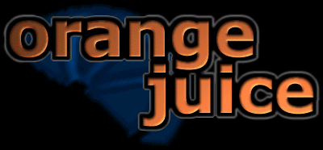

> à regarder en 800 points de largeur
> avec la fonte
verdana
Le T-Shirt LTP3
[05 sept. 99]
Si vous n'avez pas eu votre tshirt LTP3, allez voir cette page. Et si vous vous en avez eu un, mais que vous en voulez un avec des couleurs encore plusse(s) belles, et ben ca peut vous interesser aussi.
(Chandra / Orange Juice)
Wedding Compo
[31 août 99]
Comme je vous l'ai annoncé à la LTP3, Monsieur :) Skal se marie le 18 septembre. Ojuice organise donc la Wedding Compo for SKAL (Pascal) and MELANIE. Musiques, Graphs, intro, demos, tout est bon à prendre. Skal et melanie eux mêmes choisiront le vainqueur. A vos micro !!!
Envoyez vos prods à skal@????
(Yes / Orange Juice)
LTP3, Premier report
[31 août 99]
JFF et Digital Murder ont realisé le premier report un jour seulement après la party. Plein de photos, joli design, telechargez le en cliquant sur le titre.
(Yes / Orange Juice)
LTP3 - Les resultats
[31 août 99]
Ils sont là, ils sont en ligne.
(Yes / Orange Juice)
Banner contest
[16 août 99]
Avis a tous les graphistes, une "banner contest" est organisée sur le site "scenecity". Le 1er septembre 99 sera la deadline, et le jury sera constitué de 50% des createurs du site et de 50% de "stars" de la scene. pour plus d'infos cliquez sur le titre.
(Sacrilege / Move^Anta Tribe^Useless)
LTP3 - Plane Trip
[16 août 99]
Ior/Tpolm organise un voyage de groupe en avion au départ de Helsinki [Finlande] pour la Ltp3. Je sais que les Français ne prendront pas l'avion, mais c'est toujours sympa de le savoir au cas ou vous connaitriez un Finlandais :).
(Yes / Orange Juice)
Back to roots
[14 août 99]
De superbe images, une collection impressionante, ce site est dingue. Je le connais depuis 1 an et c'est bien l'un des meilleurs site dédié à la scène Amiga du passé. Cliquer sur le titre pour allez y faire un tour.
(Yes / Orange Juice)
On recherche un bon graphiste
[14 août 99]
Le Label Grinders recherche un graphiste pour leur musik-disk. Si vous pensez être le meilleur pour ce job alors écrivez à : doktor@???? pour plus d'informations.
(Yes / Orange Juice)
ugi diskmag #16 est sorti
[12 août 99]
Juste au cas où vous ne seriez pas encore au courant: allez pomper hugi issue #16 et perdez vous au mileu des 2.1 Mo d'articles et autres.
(Snotrag / Neithernor.org)
le centre d'information de la scene démo internationale
[ archivé : ce formulaire n'est plus disponible – ce site est une copie en lecture seule ]
Ce site français a pour but, tu l'aura compris, de parler des démos.
Mais bon, on va essayer de faire les choses bien. Donc voilà, tout simplement, pour que ce site apporte à tout le monde, il va falloir que tu participes à sa vie. Comment, me diras-tu ?
Tout simplement en ...
... s'abonnant au bulletin d'information
... s'ajoutant à la liste des pseudos de la scène
... ajoutant son groupe à la liste des groupes
... ajoutant son bbs, son site ftp, son www aux liens
... nous envoyant des news, en écrivant des articles pour orange juice
... parlant sur le newsgroup francophone officiel (car unique ;-)
... parlant sur le canal IRC officiel sur (ircnet) #demofr
ou plus dur...
en faisant des démos, en animant la scene, en nous payant une LS =)